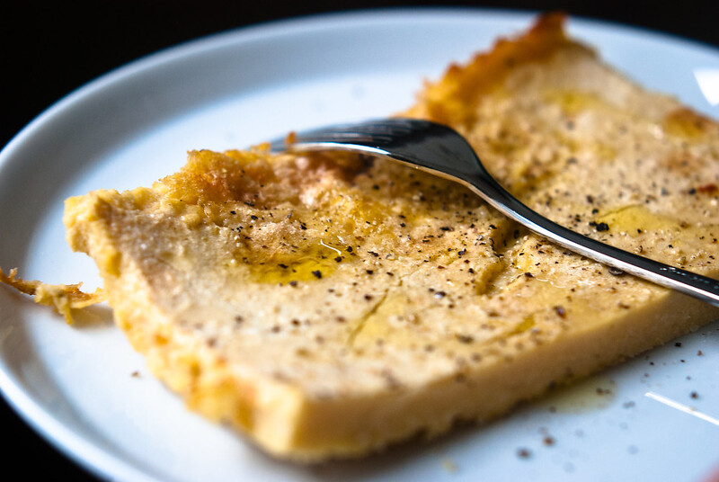

Chickpeas' Farinata

"Farinata" by Stijn Nieuwendijk is licensed under CC BY-NC-ND 2.0.
Description
Chickpeas' Farinata is a very simple savory pie made of water and chickpeas flour. It is a "poor" recipe, made with humble ingredients but very nutritious. Also, it was vegan before it was cool! Typical of Liguria, Italy, legend has it that it was created at sea, when ships returning from a war found a storm and some barrels of oil and chickpeas flour tipped over and got mixed with salt water; due to supplies shortage it couldn't be wasted so the seamen had to eat the mixture, which had been dried under the sun in an attempt to make it more eatable.
It can be seasoned with black pepper and/or rosemary to give it more flavour. Or, to give it a non-traditional twist, some vegetables can be added to the recipe, like pumpkin, carrots, or zucchini.
Ingredients (in random order)
- 150 grams of chickpeas flour
- 500 ml of water
- 1 level teaspoon of fine salt
- 4 tablespoons of extra virgin olive oil (plus some for the baking tray)
Steps
- In a bowl, mix together well chickpeas flour and water with a whisk, carefully removing clumps.
- Add the salt, then cover it and leave the mixture in a cool place for at least 4 hours.
- When the mixture has rested enough, recover it and remove the froth on the surface with a spoon.
- Add the oil and mix it well again with the whisk.
- Cover a baking tray in baking paper and oil it, then pour the mixture in it.
- Bake in static oven at maximum heat for 25 minutes on the lower part of the oven, then move it to the upper part for 15 minutes or until golden brown.
- Eat when still warm.
Back to Homepage